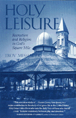

<body bgcolor="#FFFFFF" text="#000000" link="#0000FF" vlink="#CC0000" alink="#CC0000"><center><hr width="350" size="1" align="center" noshade>An accessible account of the first permanent religious meeting ground in the U.S.<hr width="350" size="1" align="center" noshade><p><a href="https://cdcshoppingcart.uchicago.edu/Cart/ChicagoBook.aspx?ISBN=9781566398411&&PRESS=temple" target="_top">Buy this book!</a> | <a href="https://cdcshoppingcart.uchicago.edu/Cart/Cart.aspx?PRESS=temple" target="_top">View Cart</a> | <a href="https://cdcshoppingcart.uchicago.edu/Cart/Cart.aspx?PRESS=temple" target="_top">Check Out</a></p><p></p></center><!--none//--><h1>Holy Leisure</h1>
<H2>Recreation and Religion in God's Square Mile</H2>
<H2><!-- [reading line] --></H2>
<h3>Troy Messenger</h3>
<P>paper 1-56639-841-X $29.95, Jul 00, <FONT COLOR=#990033>Available</FONT>
<BR> 192 pp
6x9
26&nbsp;halftones
</P><h3 align="center"><P><font color="#996633">Winner of the the Outstanding New Book on New Jersey award from the New Jersey Historical Alliance,
1999</font></P>
</H3>
<BLOCKQUOTE><I>"This [book] is a major contribution to the study of religious life in the United States. While situating the 'Jerusalem-by-the-sea' within the history of the church and its theology, </I>Holy Leisure<I> takes the reader into the daily lives of those who found a way 'to move seamlessly between play and devotion.' They modeled perfection through performances of holiness in everyday life, from their simple living arrangements in tents and their daily schedule of tasks, exercise, and prayer, to the organized baby parade, fairyland pageant, spectacle of light, and tours of a scale model of Jerusalem. The Methodists who sustained 'God's Square Mile' for more than a century demonstrate how holiness could be advanced through the sanctification of leisure. This lucid and insightful book speaks not only to the cultural history of religion, but also suggests new directions for the study of tourism and leisure."</I>
<br>&#151<b>Barbara Kirshenblatt-Gimblett</b>, author of <I>Destination Culture</I><I></I></BLOCKQUOTE>
<p>The beach has always been the place to shake off the stresses of urban life, and to relax with friends and family. And yet, as Troy Messenger shows, the beach has been a site for religious revival for as long as it's been a haven from the workday world. In this history of Ocean Grove, New Jersey, the first permanent camp meeting ground for religious revival, Messenger examines how the emergence of the beach appeared hand in hand with America's need to escape the secular world of work through leisure and religious renewal.
<BR>&nbsp;<h2>Excerpt</h2><P>Excerpt available at <a href="http://www.temple.edu/tempress">www.temple.edu/tempress</a></p>
<BR>&nbsp;<h2>Reviews</h2>
<p><i>"Messenger masterfully evokes a holy time and place&#151 summers at Ocean Grove, New Jersey&#151and reminds us of the ways in which religious practices tell us who we are and shape how we relate to each other, to our own bodies, to the rhythm of life, and to God. This is a fascinating account, both insightfully analyzed and wonderfully written and illustrated."</i>
<br>&#151<b>Nancy T. Ammerman</b>, Hartford Seminary
<p><i>"...the author does some creative things, largely stemming from his use of a performance orientation to examine how spirituality becomes enacted and practiced.... I would recommend this book to those interested in thinking about how time, space and body have been linked historically to theology, religious organization and the practice of spirituality."</i>
<br>&#151<b><i><a href="http://www.findarticles.com/p/articles/mi_m0SOR/is_2_63/ai_89078709" target="new">Sociology of Religion</a></i></b>
<BR>&nbsp;<h2>Contents</h2><P>
<p>Prologue: A Day in God�s Square Mile
<br>Acknowledgments
<p><b>Part I: The Camp Meeting at Ocean Grove</b>
<br>1. Setting the Stage
<br>2. Holy Rhythms
<br>3. Holy Space
<p><b>Part II: Performing Holiness</b>
<br>4. Body and Soul
<br>5. Male and Female
<br>6. Jerusalem by the Sea
<p>Epilogue
<br>Appendix A: Charter of Association
<br>Appendix B: By-laws
<br>Appendix C: Rules and Regulations of the Ocean Grove Camp Meeting Association of the United Methodist Church
<br>Notes
<br>Bibliography
<br>Index
</P><BR>&nbsp;<H2>About the Author(s)</H2>
<P><B>Troy Messenger</B> is director of worship and a lecturer at Union Theological Seminary.</P>
<BR><H2>Subject Categories</H2>
<p><A HREF="/tempress/religion.html" TARGET="_top">Religion</a>
<BR><A HREF="/tempress/american.html" TARGET="_top">American Studies</a>
</p>
<p align="center"><a href="https://cdcshoppingcart.uchicago.edu/Cart/ChicagoBook.aspx?ISBN=9781566398411&&PRESS=temple" target="_top">Buy this book!</a> | <a href="https://cdcshoppingcart.uchicago.edu/Cart/Cart.aspx?PRESS=temple" target="_top">View Cart</a> | <a href="https://cdcshoppingcart.uchicago.edu/Cart/Cart.aspx?PRESS=temple" target="_top">Check Out</a></p><p><font face="Arial" size="1"><a href="copyright.html" onMouseOver="window.status='Web Copyright Policy';return true;" onMouseOut="window.status=''" title="Web Copyright Policy">&copy;</a> 2015 <a href="http://www.temple.edu" target="new" onMouseOver="window.status='Link to Temple University home page';return true;" onMouseOut="window.status=''" title="Link to Temple University home page">Temple University</a>. All Rights Reserved. http://www.temple.edu/tempress/titles/1567_reg.html</font></p>